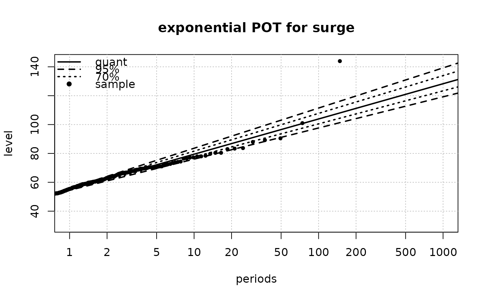
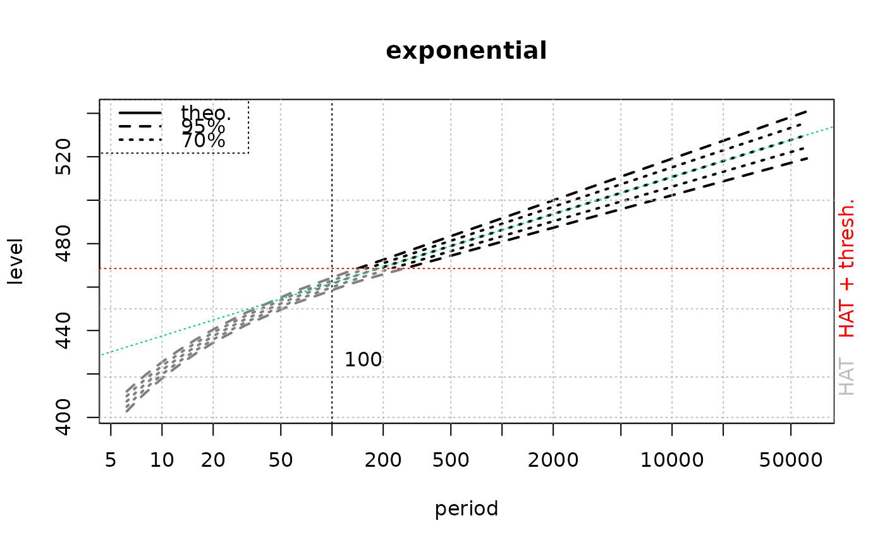
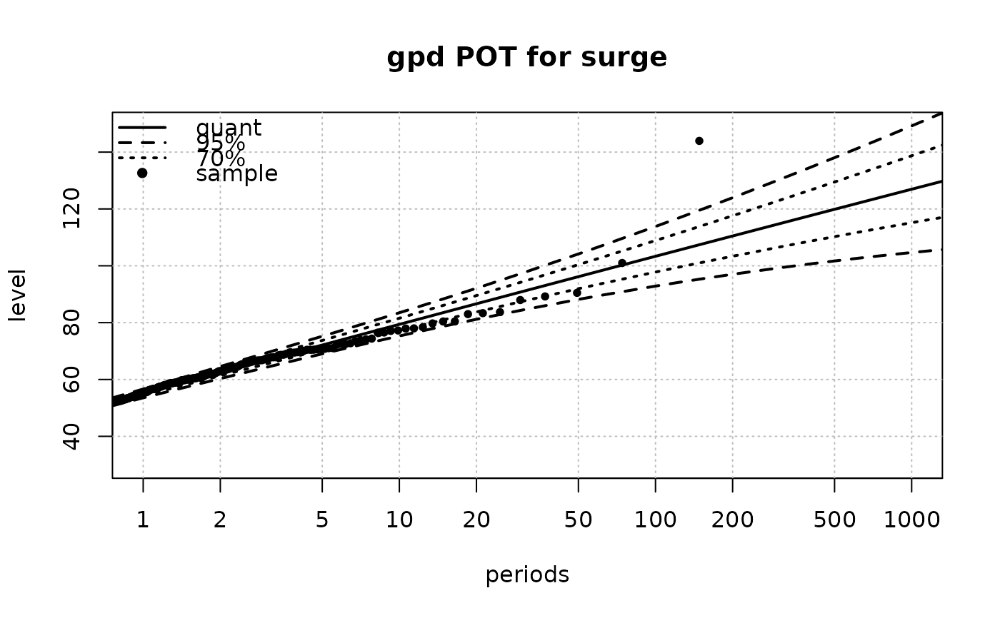
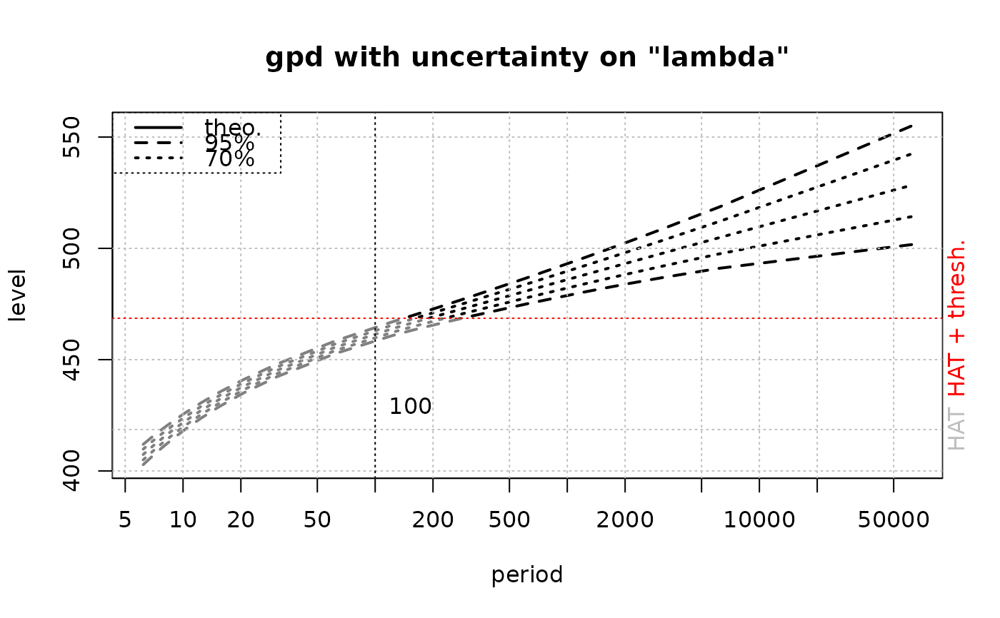

Convolution for Sea Levels tide and surge
convSL.RdComputes the distribution and return levels for sea levels from the two parts ‘tidal’ and ‘surge’ using a convolution method.
Usage
convSL(dens.x,
shift.x = 0,
threshold.y = NA,
distname.y = "exponential",
shift.y = ifelse(is.na(threshold.y), 0, threshold.y),
par.y = c("rate" = 0.1),
covpar.y = NULL,
lambda = ifelse(is.na(threshold.y), 705.8, NA),
pct.conf = c(95, 70),
use.covlambda = "lambda" %in% colnames(covpar.y),
prob = NULL,
prob.max = ifelse(is.na(threshold.y), 1-1e-8, 1-1e-5),
pred.period = NULL,
N = 2048L,
N.quad = NULL,
Tlim = c(1, 1e+5),
deriv = TRUE,
plot = TRUE,
show.x = TRUE,
show.asympt = TRUE,
alpha.below = 0.5,
trace = 0,
...)Arguments
- dens.x
-
List containing the density for the tidal level. It must contain two vectors
$xand$ygiving points on the density curve. Thexvector must be sorted in ascending order, and theyvector must contain non negative values with end values equal to 0 or nearly such. The first and last values inxgive the lowest and the highest astronomical tides up to the shiftshift.x. - shift.x
-
Numeric constant to add to the total level e.g. a reference level if the density in
dens.xhas to be shifted. This can be useful to change the reference elevation. - threshold.y
-
Threshold used in the surge POT fit. The surge excesses over this threshold are assumed to follow a known distribution.
- distname.y
-
The distribution name for the surge excesses over the threshold. The supported distribution names are those of the
fRenouvin theRenextpackage. The distribution values are the non-negative reals. Most distributions will have one or two parameters: for a gpd distribution the, location parameter must be0since it applies to excesses. - shift.y
-
Numeric constant having the same dimension as the variable
Y, and used to shift the distribution. When a POT distribution is used this is automatically set tothreshold.yand thus the distribution is assumed to be for the excesses over the threshold. In other cases, it should be normally zero. - par.y
-
Named list or vector containing the values of the parameters. Parameters with default values in the corresponding densities and distribution functions can be omitted and will be such if plugged in from a POT output. For instance the location parameter of the gpd will not be given and will take its default value
0. - covpar.y
-
A covariance matrix for the parameters of the y-part. It can also contain a row and column for the event rate
lambda(see Details). The colnames and rownames must agree and must be equal either tonames(par.y)or toc("lambda", names(par.y)). - lambda
-
The event rate in the surge POT. Should be given in events by year since the return levels are given on a yearly basis.
- pct.conf
-
Confidence levels in percent. Should be given in decreasing order.
- use.covlambda
-
Logical indicating if the uncertainty on the event rate
lambdashould be taken into account in the delta method or not. - prob
-
Probability for which the return levels are wanted in the
ret.levtable. ANULLvalue correspond to a default vector of values. - prob.max
-
Maximal probability for the return level table/plot.
- pred.period
-
If not
NULL, a vector giving periods at which predictions (return levels and confidence limits) should be computed and returned in thepreddata.frame. The results are returned in apreddata.frame. - N
-
Number of points in the convolution grid. Should be a power of two for a best computation speed.
- N.quad
-
Number of quadrature points, corresponding to high return periods.
- Tlim
-
Limits for the return periods.
- deriv
-
Logical. If
TRUEnumerical derivatives are used to compute approximate confidence intervals by the delta method.
- plot
-
Logical. Should a return level plot be drawn?
- show.x
-
Logical indicating if a "tidal return level" curve should be added to the return level plot. See Details below.
- show.asympt
-
Logical. When
TRUE, a curve showing the asymptotic behavior is added to the return level plot. This is available only for the exponential or the GPD with positive shape. In the first case, the added curve should be close to the curve obtained by convolution. In the second case, the added curve should be broadly parallel to the convolution curve. The added curve indicates the shape of the curve for very large return periods. - alpha.below
-
A value of transparency to (partially) occult the region of the plot lying below the minimal level of validity for the convolution, see Details. The value
0means a fully transparent rectangle (no effect), and the value1means a fully opaque one. When using a device that do not support transparency, only the values0and1will be possible. - trace
-
Integer giving a level of verbosity. The value
0leads to printing nothing. - ...
-
Further arguments to be passed to
RSLplotand then toplot. Most commonly used areTlimproblimfromRSLplot,main,ylimfromplot. The argumentszandurationcan also be used to add empirical points to the plot, see the vignette shipped with this package for examples.
Details
The function computes the density and distribution functions for a
surge \(Z = X +Y\) where \(X\) is a tidal level and
\(Y\) is a random surge level with given (conditional) distribution
over the threshold. The tidal level \(X\) has a distribution given
in dens.x. The two parts \(X\) and \(Y\) are assumed to be
independent hence the density of \(Z\) can be found using a
numerical convolution.
Since the distribution for the surge \(Y\) is given only for \(Y > u \) where \(u\) is the threshold, the distribution of \(Z\) is known only for \(Z > \textrm{HAT} + u\). Therefore only the corresponding part of the return level curve must be considered. The left-side part can be considered as an extrapolation for small surge levels which is unwarranted.
An approximate inference is derived using the "delta method" and the
covariance matrix given in covpar.y (if any). The return level
\(z(T)\) corresponding to $$z(T) = q_Z(p) \qquad p = 1 -
\frac{1}{\lambda T}$$ where
\(q_Z(p)\) is the quantile function of \(Z\). The
quantile function is deduced from the distribution function and the
event rate \(\lambda\) is replaced by its estimation
provided in the lambda formal.
Depending on the value of use.covlambda the impact on the
estimation of \(\lambda\) on the return level will be taken
into account or not.
When plot is TRUE, a return level plot is shown using a
log scale for the return periods. The return level curve will have an
asymptote for large return periods when the distribution of Y
is exponential.
When plot and show.x are TRUE, the conditional
expectation curve is shown. This curve shows the conditional expected
tidal level $$\textrm{E}[X \vert Z=z]$$ with
\(z=z(T)\) taken equal to the return level associated to the
period \(T\). This curve might not be visible and it can be
necessary to adjust the ylim argument. The curve points out the fact
that return levels for sea levels are not conditional to the
tidal level, and therefore that the sea levels corresponding to a
given tide are much greater than suggested by the return level curve.
It can be shown that when the distribution of surge is exponential the conditional expectation is constant for large return periods \(T\) and then takes a value < HAT. When the distribution of surge is GPD with a positive shape, the conditional expectation is increasing but with very slow rate.
Value
A list with elements
- dens.x, dens.y, dens.z
-
Density of the tidal level, the surge and the total sea level.
- dist.x, dist.y, dist.z
-
Distribution functions as for the densities
- z, T
-
Numeric vectors of return levels and return periods. These are all the computed values and the values of
Tdo not take only 'pretty' values. - dSy, dSz, dzz
-
Matrices with columns giving the derivatives of
Sy,Szorzwith respect to the parameters taken frompar.y. Fordzan extra column is placed in position1containing the derivative with respect to the event rate ifuse.covlambdaisTRUE. - ret.lev
-
Data.frame containing the return levels for some given or default probabilities. It contains columns for the probability, the return period, the return level (or quantile) as well as confidence limits for the return level. When
use.covlambdaisTRUEthe confidence limits should be associated with the return periods (and not the probabilities), at least for relatively small probabilities. - pred
-
Data.frame containing the predicted return levels for some given or default return levels.
- condExp.x
-
The conditional expectation vector, in correspondence with the grid for the density of
x. - logmomExp
-
When the distribution of \(Y\) is exponential, the logarithm of the exponential moment \(\textrm{E}[e^{X/\sigma_Y}]\) where \(\sigma_Y\) is the scale parameter of the exponential distribution. See the vignette shipped with this package for more information.
- logmomExp
Character vector
References
D. T. Pugh and J. M. Vassie (1978) "Extreme sea-levels from tide and surge probability" Proceeding of the 16th Coastal Engineering Conference, Hamburg.
B. Simon La marée océanique côtière. Institut océanographique, 2007.
Warnings
The densities and conditional expectations are given on for a wide
grid and for very small probability of exceedance
\(1-F_Z(z)\), say less than 1e-4. The numerical
precision weakens for very small values of \(F_Z(z)\). In
future versions, the vectors will be truncated at a suitable value. A
rule for a robust determination (with respect to the distribution of
surges) still needs some investigations. Yet a minimal probability of
exceedance about 1e-4 seems a good indication.
Some distribution of the surge can have unbounded density, e.g. Weibull or gamma. This may affect the precision of the discrete approximation used in the numerical convolution.
Note
When a non-zero value is used for shift.x, the returned density
for \(X\) is left unchanged, i.e. is not shifted. Only the
distribution of \(Z\) is shifted. On the contrary when an non-zero
shift.y is given, the density of \(Y\) is shifted. Thus if
a POT model is given with threshold \(u\) the distribution
specified on input is for the excesses \(Y-u\), but the
dens.y and dist.y objects of the returned list are for
the \(Y\) levels.
Examples
## This example NEEDS Renext
data(Brest); data(Brest.tide)
## POT
distname.y <- "exponential"
fit.exp <-
Renouv(x = Brest$OTdata$Surge,
effDuration = as.numeric(Brest$OTinfo$effDuration),
threshold = 50, distname.y = distname.y,
main = "exponential POT for surge")
#> Special inference for the exponential case without history
#> Warning: uncertainty on the rate not taken into account yet in the exponential with no history case

## plug results into convSL
res.exp <-
convSL(dens.x = Brest.tide,
threshold.y = 50, distname.y = distname.y,
lambda = fit.exp$estimate["lambda"],
par.y = fit.exp$estimate["rate"],
covpar.y = fit.exp$cov,
use.covlambda = TRUE, main = "exponential")

## some results
round(res.exp$pred, digits = 0)
#> prob period quant L.95 U.95 L.70 U.70
#> 100 1 1e+02 462 459 464 460 463
#> 200 1 2e+02 469 466 473 467 471
#> 500 1 5e+02 479 474 483 477 481
#> 1000 1 1e+03 486 481 492 483 489
#> 2000 1 2e+03 494 487 500 490 497
#> 3000 1 3e+03 498 491 505 494 502
#> 4000 1 4e+03 501 494 508 497 505
#> 5000 1 5e+03 503 496 511 499 507
#> 6000 1 6e+03 505 498 513 501 509
#> 7000 1 7e+03 507 499 515 503 511
#> 8000 1 8e+03 508 500 516 504 513
#> 9000 1 9e+03 510 501 518 505 514
#> 10000 1 1e+04 511 502 519 506 515
#> 20000 1 2e+04 518 509 527 513 523
#> 50000 1 5e+04 528 517 538 522 533
#> 1e+05 1 1e+05 535 524 547 529 541
#> 1e+06 1 1e+06 560 545 574 552 567
#> 1e+07 1 1e+07 584 566 602 575 593
plot(res.exp$dens.z, type ="l",
main = "density of Z", xlab = "m", ylab = "")
## POT with gpd with two
distname.y <- "gpd"
fit.gpd <-
Renouv(x = Brest$OTdata$Surge,
effDuration = as.numeric(Brest$OTinfo$effDuration),
threshold = 50, distname.y = distname.y,
main = "gpd POT for surge")

res.gpd1 <-
convSL(dens.x = Brest.tide,
threshold.y = 50, distname.y = distname.y,
lambda = fit.gpd$estimate["lambda"],
par.y = fit.gpd$est.y,
covpar.y = fit.gpd$cov,
use.covlambda = TRUE,
main = "gpd with uncertainty on \"lambda\"")
#> Warning: 'show.asympt' not yet implemented for GPD with negative shape

## ignore the uncertainty on 'lambda'
res.gpd2 <-
convSL(dens.x = Brest.tide,
threshold.y = 50, distname.y = distname.y,
lambda = fit.gpd$estimate["lambda"],
par.y = fit.gpd$est.y,
covpar.y = fit.gpd$cov,
use.covlambda = FALSE,
main = "gpd ignoring uncertainty on \"lambda\"")
#> Warning: 'show.asympt' not yet implemented for GPD with negative shape